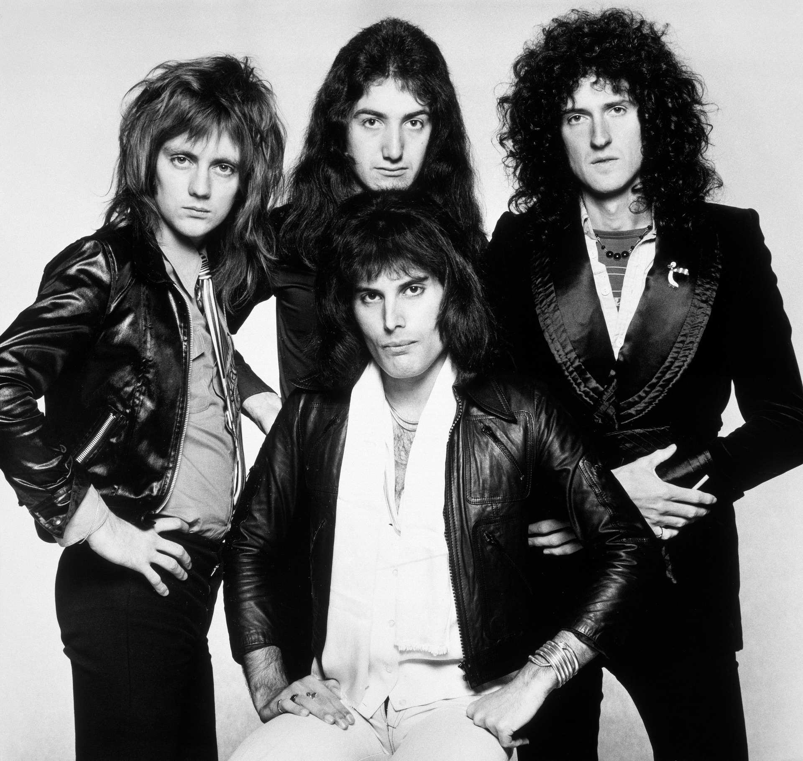
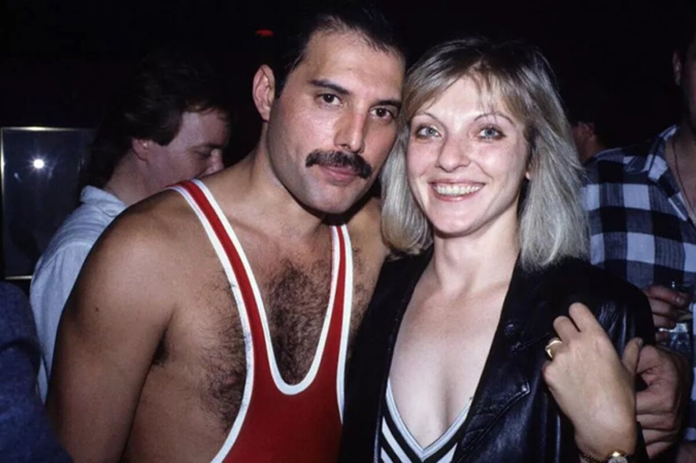

Freddie Mercury (1946-1991) foi músico, compositor, cantor e vocalista da banda britânica Queen. Conhecido como um dos maiores cantores de rock de todos os tempos, Freddie Mercury foi o nome artístico escolhido por Farrokh Bulsara. Nascido em Zanzibar, na Tanzânia, filho de Bomi e Jer Bulsara, o rapaz começou a estudar piano em Mumbai (na Índia) quando tinha apenas sete anos. Em 1964 a família de Freddie Mercury migrou para Middlesex (Londres). Foi na Ealing Technical College and School of Art que o jovem começou a cursar a graduação em Design Gráfico. A formatura aconteceu em 1969. Apesar de ter se formado em Design, Freddie dedicou toda a sua carreira à música.
Apaixonado por música, Freddie demonstrou interesse pelo piano ainda na infância. Para além do talento musical, o cantor e compositor tinha algumas particularidades que o ajudavam na parte vocal. Mercury tinha quatro dentes a mais (os incisivos), reza a lenda que a largura da boca ajudava a potencializar a voz do cantor. Durante o período da graduação o rapaz começou a cantar em uma banda chamada Wreckage. Roger Taylor (1949) e Brain May (1947), por sua vez, tinham uma banda chamada Smile. Quando o vocalista dos Smile saiu, Freddie Mercury o substituiu e os rapazes decidiram alterar o nome do conjunto para Queen. O último membro a ingressar no grupo foi John Deacon (1951), que entrou para o grupo em março de 1971.
A banda lançou o seu primeiro álbum, chamado Queen, em 1973. No ano a seguir gravaram Queen II. O disco que entretanto projetou o conjunto internacionalmente foi Sheer Heart Attack (1974). O sucesso se multiplicou com o lançamento, em 1975, de A Night at the Opera. Em meados dos anos 1980, Freddie Mercury decidiu investir na carreira solo. Seu primeiro álbum, lançado em abril de 1985, foi Mr.Bad Guy. Um dos momentos mais emblemáticos para a banda liderada por Freddie foi a aparição no concerto beneficente Live Aid, em 1985. A partir de então o conjunto voltou a se reunir, lançando o disco A Kind Of Magic.
We Are the Champions We Will Rock You Crazy Little Thing Called Love Another One Bites the Dust Bohemian Rhapsody Don't Stop Me Now Love of My Life I Want to Break Free Under Pressure Killer queen
Uma das pessoas mais marcantes da vida do cantor foi Mary Austin, com quem teve um relacionamento amoroso que se transformou numa enorme amizade. Os dois se conheceram quando ela trabalhava em uma loja de roupas, ela tinha 19 anos e ele 24. Alguns meses depois de se conhecerem os dois foram viver juntos em Kesington e, em 1973, Freddie pediu Mary em casamento. O casamento jamais aconteceu porque, em determinado momento da relação, o cantor assumiu a sua bissexualidade. O relacionamento amoroso acabou, mas a amizade seguiu em frente.
Para se ter uma ideia da sua importância, Mary, que conheceu Freddie antes da fama, foi a primeira pessoa para quem o cantor contou que tinha AIDS. Ela foi eleita também herdeira de boa parte do seu patrimônio e é a única pessoa que sabe onde as cinzas do ícone do rock então depositadas. A última relação amorosa de Freddie Mercury foi com Jim Hutton, que ficou ao seu lado até o seu último dia de vida.
Freddie Mercury foi diagnosticado com AIDS em 1987. Extremamente discreto em relação à sua vida pessoal, no dia 23 de novembro de 1991 o cantor divulgou o seguinte comunicado: "Desejo confirmar que fui testado como soropositivo e tenho AIDS. Achei correto manter essa informação em sigilo para proteger a privacidade das pessoas ao meu redor. No entanto, chegou a hora dos meus amigos e fãs ao redor do mundo saberem a verdade e espero que todos se unam aos meus médicos e a todos os que estão no mundo na luta contra essa terrível doença."
No dia a seguir a publicação do comunicado, Freddie morreu de pneumonia na sua mansão situada em Kensington (Londres). A morte prematura, aos 45 anos de idade, foi consequência de complicações provocadas pelo HIV.
Lançado em 2018 o filme Bohemian Rhapsody traz o ator Rami Malek como o protagonista Freddie Mercury. O longa metragem recebeu em 2019 quatro prêmios Óscar: melhor ator, melhor mixagem de som, melhor montagem e melhor edição de so